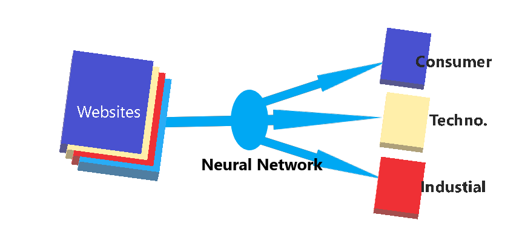

通过机器学习对网站进行分类
在本教程中，我想解释网站的不同类别的提取、清理和分类。我将使用 python 环境运行数据刮取的代码，并使用神经网络对网站进行分类。
文本分类是数据科学 许多不同领域广泛使用 的自然语言处理（NLP）任务之一。高效的文本分类器可以使用 NLP 算法自动将数据区分为类别。
文本分类 是受监督机器学习任务的示例，因为包含文本文档及其标签的标签数据集用于训练分类器。
文本分类的一些常见技术包括：
- 朴素贝叶斯分类器
- 线性分类器
- 支持向量机
- Bagging模型
- Boosting模型
- 深度神经网络
Web抓取 、Web获取、 Web数据提取是用于从网站中提取数据进行数据抓取。通常，这是通过模拟人类上网来从不同的网站收集指定的信息的软件来完成的。
一些可用于网页抓取的技术包括：
- 人工复制和粘贴
- 文本模式匹配
- HTTP 编程
- HTML 解析
- DOM 解析
- 垂直聚合（Vertical aggregation)
- 语义注释识别
- 计算机视觉网页分析
在本教程中，我们将尝试将整个模型实现为三个不同的模块：
- 数据抓取
- 基于用于创建训练数据集的关键字的分类
- 将神经网络应用于实际测试模型
第 1 单元：数据抓取
在此模块中，我将使用 Python 3.5 环境来实现我的脚本。因此，请遵循完整的参考。
第 1 步：从网站请求数据
要提取Web数据，有许多不同的包可用，但在本教程中，我将使用 requests。
| import requests
url='https://medium.com/'
try:
page = requests.get(url) #to extract page from website
html_code = page.content #to extract html code from page
except Exception as e:
print(e)
|
在上述代码中，requests.get() 方法将使用 https 协议从网站请求页面，并将页面加载到对象"页面"中。下一行代码将 HTML 代码移动到字符串html_code。因此，到目前为止，我们已经从网站中提取数据，但它仍然是HTML格式，这是远远不同于实际的文本。
第 2 步：从 HTML 页面中提取文本
为了从HTML页面中提取完整的文本数据，我们有两个高度推荐的包，BeautifulSoup 和 html2text使用上一步中找到的html_code字符串，我们可以应用以下两种方法中的任何一种。
| from bs4 import BeautifulSoup
try:
soup = BeautifulSoup(html_code, 'html.parser') #Parse html code
texts = soup.findAll(text=True) #find all text
text_from_html = ' '.join(texts) #join all text
except Exception as e:
print(e)
|
在上面的片段中，BeautifulSoup包将解析HTML代码并将数据分配给soup对象。findall() 函数查找代码中的所有可见文本，并返回我们存储在文本中的String列表中。最后，我们使用JOIN()函数将所有单个文本连接到一个公共字符串中。
| import html2text
h = html2text.HTML2Text() #Initializing object
h.ignore_links = True #Giving attributes
try:
text = h.handle(html_code) #handling the HTML code
text_from_html=text.replace("\n"," ") #replacing next line char
except Exception as e:
print(e)
|
在这个备用块中，我们使用html2text包来解析字符串，并直接从HTML代码中获取文本。另外，我们需要用空格替换空行，并最后找到text_from_html。
类似地，我们可以在大约1000+URL上使用一个循环，并从这些站点提取数据，并以CSV(逗号分隔值)格式存储它们，我们可以在分类模块中进一步使用该格式。
第 2 单元：基于关键字的分类
对于任何机器学习算法，我们需要一些训练集和测试集来训练模型并测试该模型的准确性。因此，要为模型创建数据集，我们已经拥有了来自不同网站的文本，我们将只是根据关键字对它们进行分类，然后在下一个模块中应用结果。
在本教程中，我们将网站分为三类，即：
- 技术、办公、教育产品网站（Class_1）
- 消费品网站（Class_2）
- 工业工具和硬件产品网站（Class_3）
这里的方法是，我们将拥有属于特定类别的特定关键字，并将这些关键字与文本匹配，并找到具有最大匹配值的类。
Matching_value =(与一个行业匹配的关键词数量)/(匹配的关键词总数)
因此，我们有一个针对各个类别的关键词列表，如下:
| Class_1_keywords = ['Office', 'School', 'phone', 'Technology', 'Electronics', 'Cell', 'Business', 'Education', 'Classroom']
Class_1_keywords = ['Restaurant', 'Hospitality', 'Tub', 'Drain', 'Pool', 'Filtration', 'Floor', 'Restroom', 'Consumer', 'Care', 'Bags', 'Disposables']
Class_3_keywords = ['Pull', 'Lifts', 'Pneumatic', 'Emergency', 'Finishing', 'Hydraulic', 'Lockout', 'Towers', 'Drywall', 'Tools', 'Packaging', 'Measure', 'Tag ']
keywords=Class_1_keywords + Class_2_keywords + Class_3_keywords
|
现在，我们将 KeywordProcessor 在从 URL 接收的文本中查找关键字。
KeywordProcessor可在pypi上的FlashText包中使用
1
2
3
4
5
6
7
8
9
10
11
12
13 | from flashtext.keyword import KeywordProcessor
kp0=KeywordProcessor()
for word in keywords:
kp0.add_keyword(word)
kp1=KeywordProcessor()
for word in Class_1_keywords:
kp1.add_keyword(word)
kp2=KeywordProcessor()
for word in Class_2_keywords:
kp2.add_keyword(word)
kp3=KeywordProcessor()
for word in Class_3_keywords:
kp3.add_keyword(word)
|
在上面的代码中，我们将使用关键字加载KeywordProcessor对象，我们将进一步使用这些关键字来查找匹配的关键字。
要查找匹配值的百分比值，我们定义函数百分比如下：
| def percentage1(dum0,dumx):
try:
ans=float(dumx)/float(dum0)
ans=ans*100
except:
return 0
else:
return ans
|
现在，我们将使用提取关键字(String)方法来查找文本中的关键字。我们将找到该列表的长度，以查找文本中匹配关键字的数量。下面的函数将查找百分比，并选择具有最大百分比的类。
1
2
3
4
5
6
7
8
9
10
11
12
13
14
15
16
17
18
19
20 | def find_class:
x=str(text_from_html)
y0 = len(kp0.extract_keywords(x))
y1 = len(kp1.extract_keywords(x))
y2 = len(kp2.extract_keywords(x))
y3 = len(kp3.extract_keywords(x))
Total_matches=y0
per1 = float(percentage1(y0,y1))
per2 = float(percentage1(y0,y2))
per3 = float(percentage1(y0,y3))
if y0==0:
Category='None'
else:
if per1>=per2 and per1>=per3:
Category='Class_1'
elif per2>=per3 and per2>=per1:
Category='Class_2'
elif per3>=per1 and per3>=per2:
Category='Class_3'
return Category
|
对上述函数进行循环，我们基本可以找到大部分网站类别的关键字。我们将把机密数据保存到一个Data.csv文件中，Data.csv我们还会进一步使用。现在，我们已经准备好了数据集，可以应用神经网络进行分类。
第3单元：应用神经网络
Classification of websites
在下面的实现中，我们将从头开始创建神经网络，并使用 NLTK 字标记器进行预处理。首先，我们需要导入从上述步骤获取的数据集，然后将其加载到列表中。
| import pandas as pd
data=pd.read_csv('Data.csv')
data = data[pd.notnull(data['tokenized_source'])]
data = data[data.Category != 'None']
|
以上代码将加载和清理机密数据。空值将被删除。
下面的代码将针对其类创建数据字典。
| for index,row in data.iterrows():
train_data.append({"class":row["Category"], "sentence":row["text"]})
|
为了应用神经网络，我们需要将语言单词转换成数学符号，用于计算。换句话说，我们将形成一个跨越所有字符串的所有单词的列表。
1
2
3
4
5
6
7
8
9
10
11
12
13
14
15
16
17
18
19
20
21
22
23
24
25
26 | words = []
classes = []
documents = []
ignore_words = ['?']
# loop through each sentence in our training data
for pattern in training_data:
# tokenize each word in the sentence
w = nltk.word_tokenize(pattern['sentence'])
# add to our words list
words.extend(w)
# add to documents in our corpus
documents.append((w, pattern['class']))
# add to our classes list
if pattern['class'] not in classes:
classes.append(pattern['class'])
# stem and lower each word and remove duplicates
words = [stemmer.stem(w.lower()) for w in words if w not in ignore_words]
words = list(set(words))
# remove duplicates
classes = list(set(classes))
print (len(documents), "documents")
print (len(classes), "classes", classes)
print (len(words), "unique stemmed words", words)
|
例如，输出将是：
1594个文档
3类（"1类"、"3类"、"2类")
独特词根词40000
现在，我们将为模式创建一个标记词列表，并使用NLTK Lancaster Stemmer创建一个单词包。
1
2
3
4
5
6
7
8
9
10
11
12
13
14
15
16
17
18
19
20
21
22
23
24
25
26
27
28 | from nltk.stem.lancaster import LancasterStemmer
stemmer = LancasterStemmer()
# create our training data
training = []
output = []
# create an empty array for our output
output_empty = [0] * len(classes)
# training set, bag of words for each sentence
for doc in documents:
# initialize our bag of words
bag = []
# list of tokenized words for the pattern
pattern_words = doc[0]
# stem each word
pattern_words = [stemmer.stem(word.lower()) for word in pattern_words]
# create our bag of words array
for w in words:
bag.append(1) if w in pattern_words else bag.append(0)
training.append(bag)
# output is a '0' for each tag and '1' for current tag
output_row = list(output_empty)
output_row[classes.index(doc[1])] = 1
output.append(output_row)
print ("# words", len(words))
print ("# classes", len(classes))
|
输出：
# 字 41468
# 类 3
现在，我们对数据进行最后的预处理并创建一些函数。
Sigmoid函数
| def sigmoid(x):
output = 1/(1+np.exp(-x))
return output
# convert output of sigmoid function to its derivative
def sigmoid_output_to_derivative(output):
return output*(1-output)
|
清洗函数
| def clean_up_sentence(sentence):
# tokenize the pattern
sentence_words = nltk.word_tokenize(sentence)
# stem each word
sentence_words = [stemmer.stem(word.lower()) for word in sentence_words]
return sentence_words
|
词袋函数
1
2
3
4
5
6
7
8
9
10
11
12
13 | def bow(sentence, words, show_details=False):
# tokenize the pattern
sentence_words = clean_up_sentence(sentence)
# bag of words
bag = [0]*len(words)
for s in sentence_words:
for i,w in enumerate(words):
if w == s:
bag[i] = 1
if show_details:
print ("found in bag: %s" % w)
return(np.array(bag))
|
在神经网络中使用的最后一个功能是：思维功能（Think function）
| def think(sentence, show_details=False):
x = bow(sentence.lower(), words, show_details)
if show_details:
print ("sentence:", sentence, "\n bow:", x)
# input layer is our bag of words
l0 = x
# matrix multiplication of input and hidden layer
l1 = sigmoid(np.dot(l0, synapse_0))
# output layer
l2 = sigmoid(np.dot(l1, synapse_1))
return l2
|
现在我们开始训练我们的神经网络模型。我们将通过Scratch实现它，并将使用逻辑回归进入到每个神经元。虽然只有一层，但会进行50000次（迭代），我们将训练我们的模式。完整的训练示例将在CPU上运行。
1
2
3
4
5
6
7
8
9
10
11
12
13
14
15
16
17
18
19
20
21
22
23
24
25
26
27
28
29
30
31
32
33
34
35
36
37
38
39
40
41
42
43
44
45
46
47
48
49
50
51
52
53
54
55
56
57
58
59
60
61
62
63
64
65
66
67
68
69
70
71
72
73
74
75
76
77 | def train(X, y, hidden_neurons=10, alpha=1, epochs=50000, dropout=False, dropout_percent=0.5):
print ("Training with %s neurons, alpha:%s, dropout:%s %s" % (hidden_neurons, str(alpha), dropout, dropout_percent if dropout else '') )
print ("Input matrix: %sx%s Output matrix: %sx%s" % (len(X),len(X[0]),1, len(classes)) )
np.random.seed(1)
last_mean_error = 1
# randomly initialize our weights with mean 0
synapse_0 = 2*np.random.random((len(X[0]), hidden_neurons)) - 1
synapse_1 = 2*np.random.random((hidden_neurons, len(classes))) - 1
prev_synapse_0_weight_update = np.zeros_like(synapse_0)
prev_synapse_1_weight_update = np.zeros_like(synapse_1)
synapse_0_direction_count = np.zeros_like(synapse_0)
synapse_1_direction_count = np.zeros_like(synapse_1)
for j in iter(range(epochs+1)):
# Feed forward through layers 0, 1, and 2
layer_0 = X
layer_1 = sigmoid(np.dot(layer_0, synapse_0))
if(dropout):
layer_1 *= np.random.binomial([np.ones((len(X),hidden_neurons))],1-dropout_percent)[0] * (1.0/(1-dropout_percent))
layer_2 = sigmoid(np.dot(layer_1, synapse_1))
# how much did we miss the target value?
layer_2_error = y - layer_2
if (j% 10000) == 0 and j > 5000:
# if this 10k iteration's error is greater than the last iteration, break out
if np.mean(np.abs(layer_2_error)) < last_mean_error:
print ("delta after "+str(j)+" iterations:" + str(np.mean(np.abs(layer_2_error))) )
last_mean_error = np.mean(np.abs(layer_2_error))
else:
print ("break:", np.mean(np.abs(layer_2_error)), ">", last_mean_error )
break
# in what direction is the target value?
# were we really sure? if so, don't change too much.
layer_2_delta = layer_2_error * sigmoid_output_to_derivative(layer_2)
# how much did each l1 value contribute to the l2 error (according to the weights)?
layer_1_error = layer_2_delta.dot(synapse_1.T)
# in what direction is the target l1?
# were we really sure? if so, don't change too much.
layer_1_delta = layer_1_error * sigmoid_output_to_derivative(layer_1)
synapse_1_weight_update = (layer_1.T.dot(layer_2_delta))
synapse_0_weight_update = (layer_0.T.dot(layer_1_delta))
if(j > 0):
synapse_0_direction_count += np.abs(((synapse_0_weight_update > 0)+0) - ((prev_synapse_0_weight_update > 0) + 0))
synapse_1_direction_count += np.abs(((synapse_1_weight_update > 0)+0) - ((prev_synapse_1_weight_update > 0) + 0))
synapse_1 += alpha * synapse_1_weight_update
synapse_0 += alpha * synapse_0_weight_update
prev_synapse_0_weight_update = synapse_0_weight_update
prev_synapse_1_weight_update = synapse_1_weight_update
now = datetime.datetime.now()
# persist synapses
synapse = {'synapse0': synapse_0.tolist(), 'synapse1': synapse_1.tolist(),
'datetime': now.strftime("%Y-%m-%d %H:%M"),
'words': words,
'classes': classes
}
synapse_file = "synapses.json"
with open(folder_path+synapse_file, 'w') as outfile:
json.dump(synapse, outfile, indent=4, sort_keys=True)
print ("saved synapses to:", synapse_file)
|
最后，我们将训练模型：
| import time
X = np.array(training)
y = np.array(output)
start_time = time.time()
train(X, y, hidden_neurons=10, alpha=0.1, epochs=50000, dropout=False, dropout_percent=0.2)
elapsed_time = time.time() - start_time
print ("processing time:", elapsed_time, "seconds")
|
输出：
训练10个神经元，α：0.1，辍学：假
输入矩阵：1594x41468 输出矩阵：1x3
10000 次迭代后增量：0.0665105275385
20000 次迭代后增量：0.0610711168863
30000 次迭代后增量：0.0561908365355
40000 次迭代后增量：0.0533465919346
50000 次迭代后增量：0.0461560407785
保存的突触到： 突触. json
处理时间： 33060.511512227951 秒
正如我们所看到的，它花了近11个小时来训练模型。经过如此密集的计算，我们准备测试数据。
用于测试数据的函数：
1
2
3
4
5
6
7
8
9
10
11
12
13
14
15
16
17 | # probability threshold
ERROR_THRESHOLD = 0.2
# load our calculated synapse values
synapse_file = 'synapses.json'
with open(synapse_file) as data_file:
synapse = json.load(data_file)
synapse_0 = np.asarray(synapse['synapse0'])
synapse_1 = np.asarray(synapse['synapse1'])
def classify(sentence, show_details=False):
results = think(sentence, show_details)
results = [[i,r] for i,r in enumerate(results) if r>ERROR_THRESHOLD ]
results.sort(key=lambda x: x[1], reverse=True)
return_results =[[classes[r[0]],r[1]] for r in results]
#print ("\n classification: %s" % ( return_results))
return return_results
|
让我们测试模型的准确性：
| classify("Switchboards Help KA36200 About Us JavaScript seems to be disabled in your browser You must have JavaScript enabled in your browser to utilize the functionality of this website Help Shopping Cart 0 00 You have no items in your shopping cart My Account My Wishlist My Cart My Quote Log In BD Electrical Worldwide Supply Remanufacturing the past SUSTAINING THE FUTURE Hours and Location Michigan Howell")
|
输出：
['Class_3'， 0.97663437888614435]
| classify(" New Website Testimonial Policies Parts Catalog Contact Support Forum Documentation Themes WordPress Blog Products Spindle Parts Latest News Kennard Parts Suggest Ideas Legal/Disclaimers WordPress Planet News About CDT Home Latest News Testimonial Products Parts Catalog About CDT History Staff Policies Centrum Legal Disclaimers Contact About CDT Custom Drilling Technologies established in 1990 has been providing superior customer service to the printed circuit board industry for almost 20 years We specialize in Excellon Drilling and Routing Equipment Parts and Service Our staff has over sixty years of combined experience in the design building troubleshooting operation programming")
|
输出：
['Class_1'， 0.9620297535870017]
正如你所看到的，我们在这些测试中获得了相当高的精确度。我在不同的数据上尝试过这个模型，并发现了相当高的精确度。
在这种只有一层的模型中，大约95%+的精度被认为是相当精确的。对于不同模型的进一步分类，我们可以使用Keras或TensorFlow。为了减少训练模型的时间，我们可以使用NVIDIA GPU。
现在，利用深度神经网络、BP神经网络，都可以方便地对数据进行抓取和分类。
原文翻译自网文，作者: Ridham Dave
原文: https://towardsdatascience.com/industrial-classification-of-websites-by-machine-learning-with-hands-on-python-3761b1b530f1